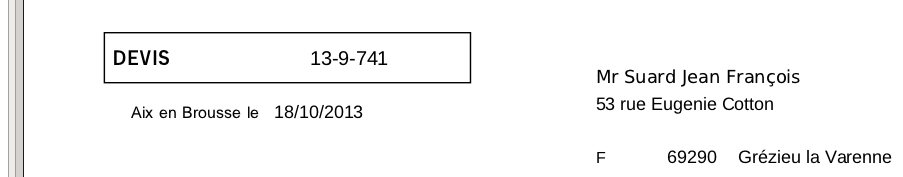
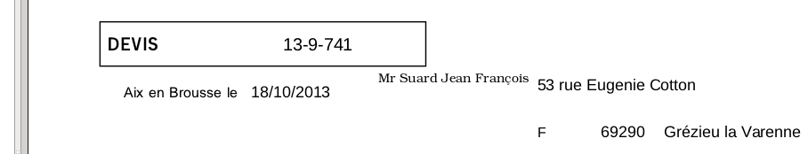
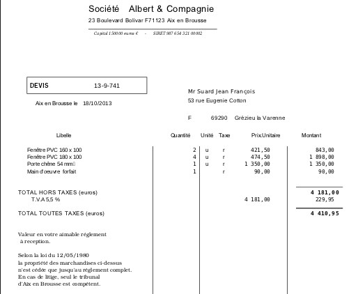
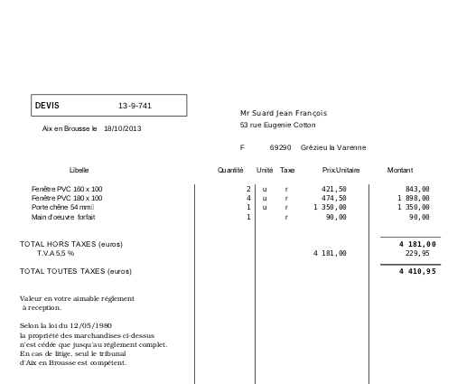
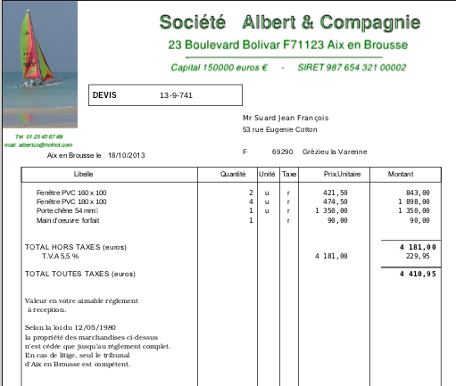
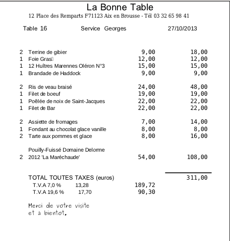

Menu ---- Saisie
Facture ------ Mise en Page ------- Gestion Clients -------- Gestion Produits --------- Paramètres
VERGIFAC -- Mise en Page
Les documents finaux (factures, devis, etc) sont 'imprimés' dans un
fichier de format PDF. Ce format est un standard universel. En principe
toutes les machines ont un programme qui permet de les visualiser et de
les imprimer.
Ce format est aussi très utilisé pour transmettre des documents par
mail.
Création du fichier PDF: Fenêtre 'Saisie de Facture' bouton
'Impression'.
On peut relancer l'impression AUTANT
DE FOIS QUE NÉCESSAIRE.(*)
- après modification de la saisie
- après changement ou modification du fichier de commande de mise en page.
(*)_ Sur linux (Ubuntu et Evince afficheur de pdf) le fichier pdf
modifié est automatiquement actualisé.
_Sur Windows ( Acrobat Reader afficheur de pdf) le fichier n'est pas
actualisé tant que acrobat reader est actif. Donc entre deux essais, il
faut fermer acrobat reader.
Vergifac imprime les documents en suivant les directives d'un fichier
de commande de mise en page selon les souhaits de l'utilisateur lui
permettant de 'programmer' la présentation de son document.
Choix du fichier de mise en page
Dans la fenêtre 'Saisie Facture' -> clic bouton 'Fic mis en page' -> choisir un fichier (.txt).
_Conseil: pour mettre au point votre fichier de commande, faites des
essais sur une copie d'un fichier de commande de démonstration. Ouvrir
ce fichier -> modifier -> enregistrer -> relancer l'impression.
Caractéristiques du fichier de commande de mise en page.
_C'est un fichier texte qu'il faut ouvrir avec un
éditeur de texte (notepad, gedit, etc).
_Vergifac le trouve dans le
dossier 'misenpage'.
_Le codage des caractères doit être en utf8. Si non le premier accent arrête l'impression.
Avec gedit (linux) ou notepad (windows) faire - Fichier -
Enregistrer sous. Choisir pour 'Codage' utf8. A faire une fois à la
création, le fichier est désormais codé en utf8.
_La première ligne du fichier ne doit pas être une commande (obligatoire pour les fichiers textes crées avec windows).
( mettre un commentaire ligne commençant par /*).
_Polices: pour trouver les polices de votre machine, cherchez la liste ou lancez un
programme qui les listent et saisir les noms de celles que vous
souhaitez utiliser dans le fichier de commandes. Exemple de programme
qui liste les polices: Editeur de textes (word, open office writer),
traitement d'images (gimp, etc), notepad de windows, etc.
Si la police est inconnue sur votre machine, Vergifac (cairo) la remplace sans rien dire.
________extrait fichier de commande
numdoc x=160 y=150
pol=arial siz=11
datdoc x=140 y=180
pol=arial siz=10
ad1 x=320 y=160
pol=sans siz=10
ad2 x=320 y=175 pol=arial siz=10
ad3 x=320 y=190 pol=arial siz=10
pays x=320 y=205 pol=arial siz=9
codpos x=360 y=205 pol=arial siz=10
ad4 x=400 y=205 pol=arial siz=10
________extrait fichier pdf résultant

exemple: la première ligne de l'adresse du destinataire.
ad1 x=320 y=160
pol=sans siz=10
ad1 = code de l'information première ligne adresse à imprimer.
x=320 position dans la page depuis la marge gauche
y=160 position dans la page depuis le haut de la page
pol=sans police d'impression
siz=10 taille des caractères
si le document doit être expédier par la poste dans une enveloppe à
fenêtre, il suffit de modifier si besoin x= y= etc pour que l'adresse
soit bien visible.
_____________modification de la ligne
ad1 x=220 y=170
pol=book siz=8
_____________résultat

================= DÉTAIL DES COMMANDES
Des explications détaillées des commandes se trouvent dans le fichier: aide-misenpage.txt du dossier
'misenpage'.
Ce fichier est aussi un fichier de commande.
On y trouve donc l'explication et la commande.
Sur une copie de ce fichier la première modification sera sans doute
pour les commandes 'entvar' pour imprimer le document avec votre
en-tête.
entvar x=150 y=20 pol=garuda siz=16
Société Albert & Compagnie
........................remplacer par votre en-tête
entvar x=150 y=38 pol=garuda siz=10
23 Boulevard Bolivar F71123 Aix en Brousse
etc..
========== EXEMPLES ( à partir des fichiers de démonstration)

preimp.txt l'imprimante est chargée avec du papier à en-tête.

entete.txt l'en-tête est un fichier image de type png qui sera intégrée
au document.

minifac.txt (facture type commerce sur moitié de feuille A4). Doc relu restau.txt.
